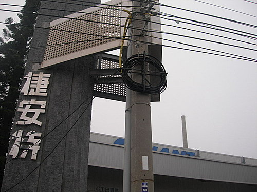

2009.3.12(四)第七天
上午：桃園觀音1213民宿出發-台15線-永安-新豐-南寮-海八景專用道(17公里)—香山—約50公里--老鍋農場—新竹米粉.貢丸湯
下午：接台61線--竹南-白沙屯-接台1線通宵-苑裡-大甲(60公里)-鎮瀾宮進香-夜宿汽車旅館
經過連日來的風雨交加，以及東部高低起伏的丘陵，我們環島第七日的體力與毅力，似乎瀕臨極限，不過今日開始己經進入平坦的西部平原，而且氣象報告也說今後降雨機率不大，大夥兒多半輕鬆不少，想到已經過多日的艱辛，剩下的行程應該是倒吃甘庶，頓時又燃起心中的鬥志。雖然隊友小揚因另有要事，已經在昨日離隊（真可惜！），不過原定也要先行回家的麗麗姐因連日來的一馬當先，信心大增，決定留下一起完成這人生值得留念的紀錄，而第1日幫大夥兒補給的肉粽，也在今日開始接替吳大，帶領大家繼續前進。
清晨在1213民宿出發。小紀隊長永遠是氣定神閒，站在隊伍的最前方。
有人說環島最困難的在於前三日，只要熬過就成功一半，我倒覺得最困難的地方，是在清晨要出發前的時刻，要趕走嗑睡虫，讓休眠的身體迅速運轉起來，實在不容易，還好有隊友的支持，我也一步步走到這裡了 。
。
台15省道一隅，這是我們今日行程的起點。這裡的路很寬，車也不多，等一下可以飆一下速度 。
。
今日路程走的是西濱海線，漁港自然要拜訪一下，否則實在沒有什麼特殊景觀。因此途中經過紅毛港，小獅就順道進來看看，資料上說，這是三百多年前荷蘭人登陸的地方(好像台灣的紅毛港都是如此)，也是北台灣地區惟一水筆仔、海茄苳混生的紅樹林生態保護區，到此一遊囉
新竹漁港前，身穿義大利名駒可樂果車衣的小獅，自然散發出一股殺氣，大夥兒等一下可要加把勁了。
正當我們正要進入今日重頭戲-新竹十七公里海岸自行車道時，突然見到前方警車管制，民眾圍觀，我們竟然遇到了本年度國際自行車環台賽新竹段的比賽，只見一大群色彩鮮艷的車手呼嘯而過，非常壯觀，這可是我生平第一次看到正式比賽，不知道有沒有拍到什麼有名的車手。後來在網路查得，這是國際自由車環台賽中唯一的臨海競賽道路，這項比賽去年還屬於北京奧運資格賽，可見其重要性，也有幸躬逢其會。
進入自行車道前合影
這是海八景風景區的旅客服務中心，外觀採藍白兩色，頗有地中海希臘風，搭配這裡的藍天白雲，頗為合適，不過這洋蔥狀的屋頂與圓柱狀的觀景台，倒屬於俄羅斯東正教風格，也算是一種族群融合吧。
新竹的好友小玲專程前來陪騎這段行程，她還特別帶了專業的相機，幫大家留念，感恩 。
。
本隊之花-麗麗
風力發電廠的大風車
四個彩虹橋之一
眾人騎過的就是新竹市政府邀請貝聿銘建築師事務所設計出以巴黎羅浮宮金字塔為設計概念的焚化爐。玻璃帷幕外牆的建物設計，完全顛覆焚化爐的刻板印象，只是所費不貲，據說光是清潔帷幕，每年就要500萬元 。
。
這也是電影「綀習曲」中的一個場景，導演也藉這個焚化爐，點出一些環保問題。
環台賽的終點站，遇到一群熱情的外國朋友，不過因為時間的關係，我們無法等到比賽隊伍抵達，目睹車手衝線，體會一下那種緊張剌激的感覺。像我們這種有計畫的單車長途旅行，還是要有一定的進度，沒法無拘無束的自由行走，殘念
騎完十七公里自行車道，大夥兒就在香山的老鍋休閒農莊享用道地的新竹傳統美食。這裡的菜色當然少不了米粉、貢丸、魯肉飯等小吃，口味不錯，重要的是分量十足，大家點菜時毫無預期，差點吃不完。不過，還是要感謝小玲盛情，幫大家買單，替大家省了不少飯錢，妳有機會一定要常來高雄，讓我們也盡地主之誼
今日這裡有好幾間小學在這裡舉辦校外活動，原本好不熱鬧，總算他們準備回家了，讓大家可以泡茶偷閒一下。
這是小玲為大家拍攝的特寫
什麼事這麼開心？
猜猜我是誰? 
年輕人，等一下跟著我就對了

經過上午輕鬆的自行車道行程後，下午要越過苗栗直奔台中大甲，尤其苗栗段起起伏伏，免不了許多爬坡，就稍微艱難一點。而且台61線是快速公路，雖設有慢車道，但有些高架道路並沒有慢車道，就要注意導引到旁邊的台15線，我和小紀隊長有一段就因不注意，騎上高架道路後，原路折返下來，實在有點危險。這時不禁想起新竹的十七公里海岸自行車道如果再長一點，讓大家輕鬆安全騎車多好，現在聽說各縣市政府有意將開闢自己特色自行車道，彼此串連，或許將來我們也可以來個自行車道環島

途中遇到一家捷安特，似乎是工廠，可惜大家趕路，不然也可以進去交流一番。
終於在接近下午六點時到達大甲，今天晚上投宿於夏威夷汽車旅館，比起昨日在觀音鄉民宿睡的通鋪，這裡的設備果然讓人疲勞盡消我是說床很好睡啦
晚上在大甲休息，自然不能遺漏鎮瀾宮。在西部的行程中，寺廟也是不能遺忘的重點，尤其鎮瀾宮，莊嚴肅穆、香火鼎盛，不愧其名剎的地位，尤其不久將要開始的遶境行程，宮內外有許多活動，相當熱鬧。我們當然要進來參拜一下，有拜有保佑囉 。
。
鎮瀾宮旁的特色小吃，相當豐盛，飽餐後，也沒忘了家中妻小，還到了附近的裕珍馨採買貢品，且要百里宅急，千萬不要以為我們只是遊山玩水而已
今日行程到此結束，以下是落差圖及航跡圖
環島7